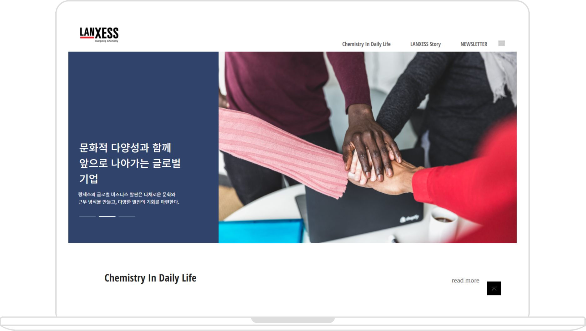

Web - UI/UX Redesign
Webmagazine
LANXESS
화학기업 LANXESS의 혁신 제품과 기술이 삶의 질 향상에 기여한 사례를 소개하는 웹 사이트

I. 소개
- 반응형 웹
- mediaQueries
- mobileFirst
- UI/UX
- 리디자인
DATE
2021 / 7~8
DURATION
3주
VIEWPORT
Mobile : 375 / Tablet : 768 / PC : 1280 이상
II. 문제 & 해결
UI/UX
부족한 메인 컨텐츠
- 단 3개만 보여지는 컨텐츠
- 한 메뉴의 컨텐츠만 보여짐
- 메뉴 당 9개씩 총 18개의 컨텐츠 배치
- 딱딱하지 않은 느낌을 주기 위해 컨텐츠의 위치를 교차하여 배치
이미지 소스 부족
- 컨텐츠를 보충하면서 썸네일 이미지 소스 부족
- 내용이 똑같은 배너를 바꾸기 위한 이미지 소스 부족
- 이미지 배포 사이트를 통해 각 컨텐츠에 맞는 이미지 적용
- 본사 홈페이지에서 배너의 내용과 이미지 소스 탐색 및 적용
푸터에 과다한 컨텐츠 배치
- 소셜미디어, 약관, 카테고리 등 과다하게 배치
- 카테고리는 메뉴 안으로 옮기고 약관은 간소화하여 배치
- 소셜미디어 부분은 어울리는 아이콘으로 배치
Publishing
- 레이아웃 작성 시 grid로 작업하여 본래 의도대로 컨텐츠 배치 불가
- → flex로 변경하여 교차하여 정렬 가능
- viewport 값이 줄어들면서 레이아웃이 무너짐
- → 여백의 단위를 px(고정값)이 아닌 vw, vh로 적용
- header를 고정시키면서(fixed) 바로 밑에 위치한 배너와 틈이 생김
- → body에 header의 높이만큼 padding값을 주어 해결
- viewport 값이 달라지면서 배너의 이미지 크기도 달라짐
- → background의 cover 값을 이용해 해결
III. 디자인
Keyword
- 깔끔한
- 세련된
Color
#000
#f4f4f4
#30436a
Font
- KOR
- Noto Sans KR
- 랑세스 코리아 웹매거진
- ENG
- Open Sans Condensed
- LANXESS Korea Webmagazine